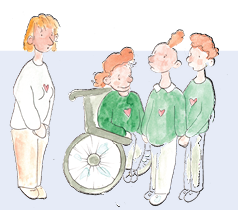
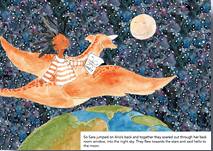
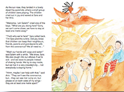
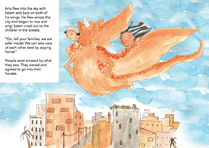
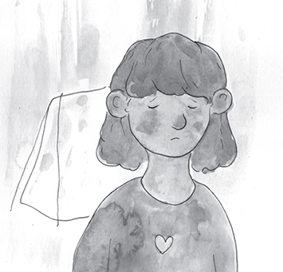
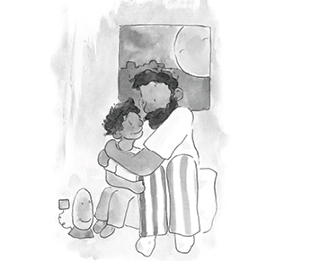

KEY MESSAGE 2 Children speak out
CHAT 2
Let’s CHAT
We live in a challenging time. We will educate the children about how to be safe and encourage them to use their voices to be heroes who speak out to inform and protect others.

In the story, Sara feels miserable. She feels the coronavirus has turned her world upside down.
ASK the children
How do you feel about the coronavirus and what has it done to your life?
When you ask this, children will respond in different ways. They might say...
-
“I’m happy. I like not having to go to school.”
-
“I miss my friends.”
-
“I hate the virus.”
-
“All day, every day, I am bored.”
ASK the children
Right now, we don’t know how to fight the coronoavirus and make it go away. Sara has a different idea about how to help. What does Sara want to do?
When you ask this, children might say: “Sara wants to find a way to tell all the children in the world how to protect themselves so they can protect everyone else.”
ASK the children
Yes, Sara has courage. It’s not easy for children to speak out and have their voices heard. Can you share a time when you used your voice to speak out for what you believe?
Children can give examples. If the children can’t think of examples, the adults can share examples that show a child speaking out.
Let’s CHAT
Sara went to sleep wanting to be a hero. In her dream, her imagination created Ario to help her figure out how to protect others against the virus. Let’s keep reading to hear how Sara speaks out and makes her voice heard about how to protect others.
> Read these pages of My Hero is You



THE ARIO
INFORMATION FOR ADULTS
MANAGING OUR STRESS
ADULTS AND CHILDREN FEEL STRESSED
Today’s times are stressful for everyone in every country in every city on every street across the world.
It is unrealistic to imagine that adults or children can be fully rid of all our stress. It is more realistic to learn to manage or cope with our stress. It is honest to acknowledge that we all feel stressed - adults and children - and CHAT with the children about realistic ways they can cope that fit their ages, cultures and environments. Of course, you as adults, also feel stress. Your children will see and feel your stress and often copy you.

BE HONEST AND SHARE YOUR STRESS
Finding ways to cope with your own stress is important for your peace of mind and is an example your children can copy for how they can cope with their stress.
UNDERSTANDING CHILDREN’S STRESS
Adults need to assist children to find ways they can cope with their feelings of stress. Important to be patient and try to understand their reasons for feeling this stress. It is good to praise the children for their efforts to cope and remain patient since the stress is ongoing and won’t just disappear.

BREATHING EXERCISE HELP
Adults can teach children how to use breathing exercises to help them relax. Good for adults to try the exercises themselves first so they feel the benefit and then teach the children. When adults teach the breathing exercises they should speak slowly and in a calm, low voice. If children breathe too fast, it will not be helpful. If children breath too slowly, they will be uncomfortable. Adults can encourage children to continue to use the breathing exercises to help them relax whenever they feel scared.
Some children might say, “The breathing did nothing.” Adults can encourage these children to try it at times when they really feel scared and then check if it helps. Adults can also encourage children to think of others ways to relax.